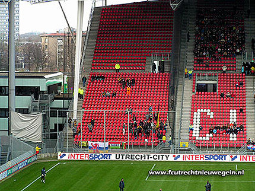
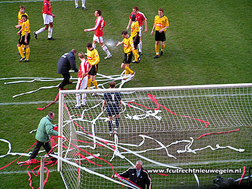
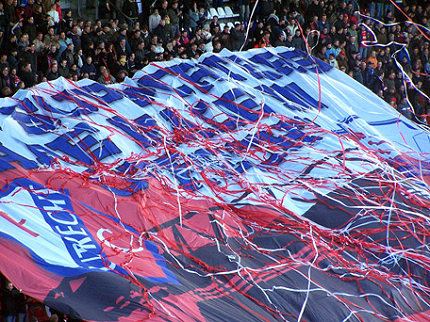
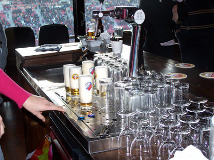
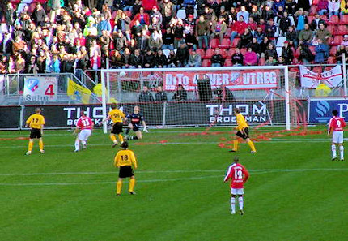
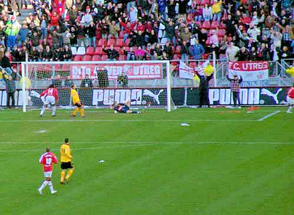
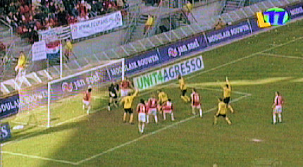
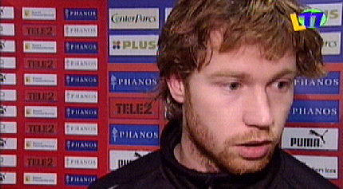
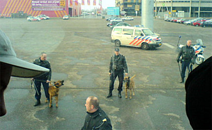

|
FC
Utrecht - Roda JC (2-1) 26 februari 2006
|

Roda had weinig supporters mee. Dat kwam echter niet alleen door het
carnaval maar ook door de om onduidelijke redenen teruggestuurde bus
van het Fanprojekt. (foto:fcutrechtnieuwegein.nl)

Veel troep in het doel van Kujovic. (foto:fcutrechtnieuwegein.nl)

Een groot doek gaat over de Bunnik-side. (Foto: Tim Voncken)

De juf achter dit buffet moet nog veel leren. (Foto: Tim Voncken)

Alweer een vroege tegengoal! Nu is het Dave van den Bergh: 1-0, (6').
(Foto: sv-online.info)

Ramzi scoort 2-0, (30'). (Foto: sv-online.info)

Na een hoekschop ontstaat er een scrimmage voor het doel waaruit
Van Dijk 1-2 scoort, (46'). (screenshot L1).

Toch was Gregoor van Dijk teleurgesteld na de wedstrijd. (screenshot L1).
Hij beseft dat kwalificatie voor de play-offs nu vrijwel onmogelijk is.

De Fanprojektbus die door de politie was teruggestuurd zonder noemens-
waardige aanleiding wordt in Kerkrade ontvangen met een meelijwekkend
machtsvertoon van de lokale politie. (Foto: Fanprojekt).
© Koempels Pleasure Dome
|